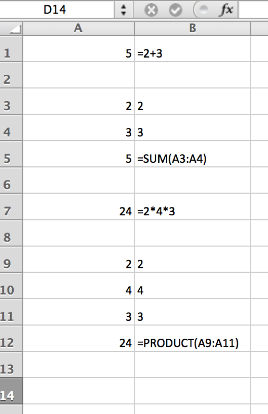
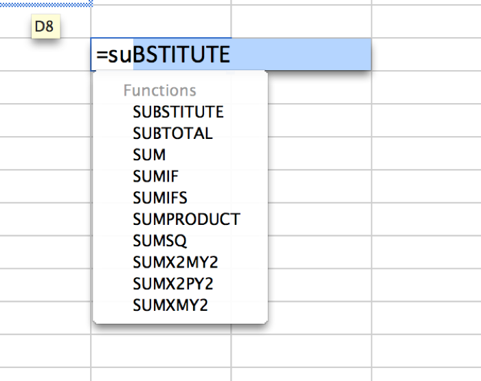
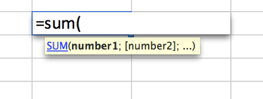
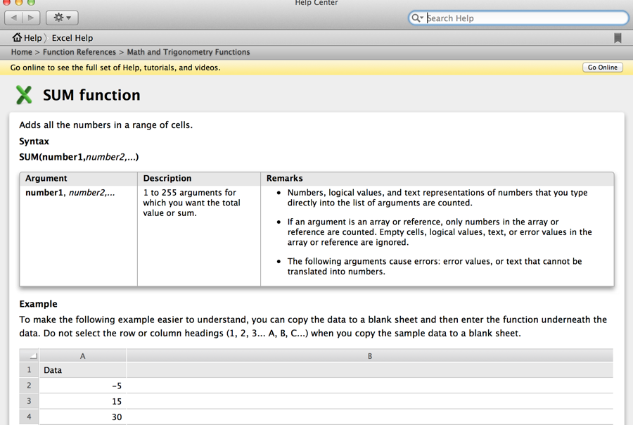
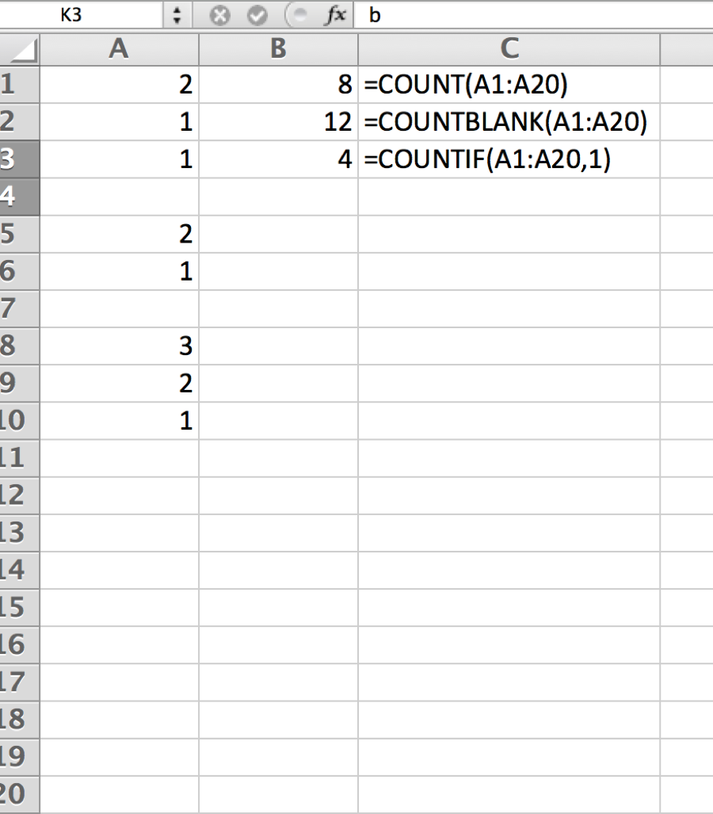
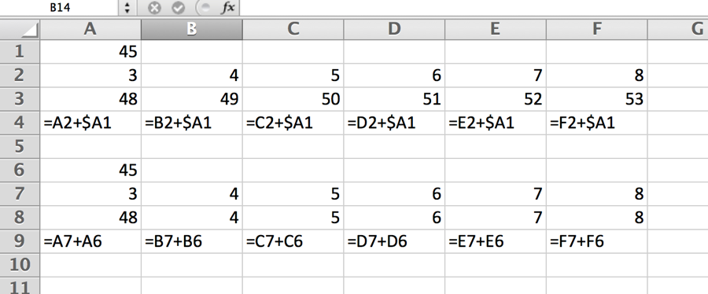
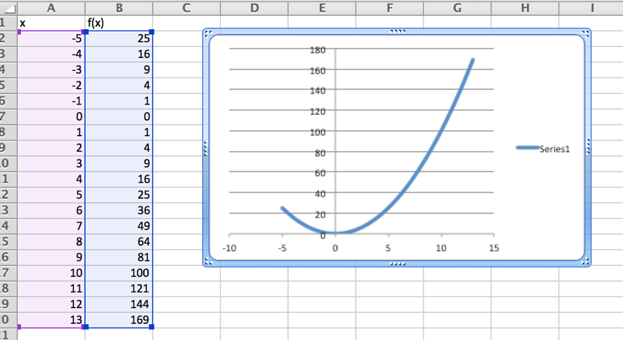
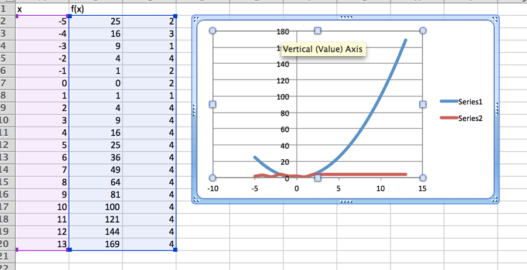

Kapitel 2 Excel simpel brug
2.1 Video Excel for begyndere.
Når man bruger excel kan man arbejde i 1 eller flere celler, indtastningerne er vist i cellen til højre for selve der er skrevet i.

Når man skal skrive en formel som f.eks. sum skal skrive =SUM, når man skriver begynder der at komme autocomplete forslag op. Man kan vælge disse eller skrive videre.

Når man har skrevet kommandoen og en startparentes ( , får man en syntakshjælpe tekst op, der viser hvilken struktur argumenterne skal have.

Her kan man se at de forskellige argumenter adskilles af semikolon (Bemærk det kan også være komma , for andre OS/EXCEL versioner). Vil man have yderligere hjælp kan man klikke på den blå tekst, så får man en hjælpeside med eksempler, som nedenfor.

Man kan kopiere celler med CTRL C (Windows) CMD C (MAC). Man kan paste celler med CTRL V (Windows) CMD V (MAC). Bemærk hvis der er cellereferencer flytter disse sig tilsvarende antal rækker og søjler.
Eller man kan også kopiere ved at stille sig i højre hjørne af cellen og tryk og holde musen og trække celler.
Man kan lyse flere celler op og trække for at fortsætte det system der var lyst op. F.eks. hvis man lyser med 1 2 og 3 i rækkefølge får man 4, 5, 6 …
Dette virker også med f.eks. datoer, man kan så ændre cellers formatering ved CMD/CTRL 1, eller højreklik FORMAT CELLS
Transponer dvs. ændre søjler til rækker eller rækker til søjler. Lys rækken/søjlen op kopier → Marker den celle hvor første element i søjlen/rækken skal være → vælg højreklik special paste eller CTRL CMD V → Sæt hak i transpose → tryk ok.
Man kan tælle antal gange elementer forekommer i en række celler, hvor mange blanke felter etc. med COUNT COUNTBLANK og COUNTIF

Her undersøges cellerne A1 til A20 for antal celler, antal blanke og antal gange der står 1.
Hvis man vil kopiere en celle med referencer til andre celler, således at ikke alle referencer ændres kan man låse en række eller søjle ved at sætte $ foran række eller søjlenummeret . I eksemplet nedenfor er A1 låst i formlerne i 3. række, indholdet i formlerne fremgår af 4. Række. Det er kun søjlen der er låst. Hvis man ikke havde sat $ foran søjle indikatoren, resultatet være blevet som i række 8.
Man kan bruge genvejstast CMD T på Mac, F4 på Windows, man kan shuffle mellem de forskellige $ låse ved at bruge genvejstasten flere gange.

Excel kan godt tegne grafer, skriv f.eks. -5 i A1 → -4 i A2 → lys begge celler op og træk fra højre hjørne ned til A20 → nu skulle cellerne løbe fra -4 til 13 → skriv nu i B2 = klik på A1 cellen skriv ^2 tryk enter → nu skulle B2 gerne give 25 vi har kvadreret cellen. → Træk denne cellen med sort kryds hele vejen til B20 → lys B1 til B20 op → Vælg charts fanen → vælg scatter → vælg Smooth Lined Scatter → nu skulle der gerne være et plot af grafen
Man skulle gerne få samme billede som nedenfor.

Man kan også lægge flere plots i samme koordinatsystem man vælger dem søjlevis, holder CTRL (Windows) CMD (Mac) nede mens man vælger yderligere søjler. Se tegningen nedenfor

{#section-2 .ListParagraph}